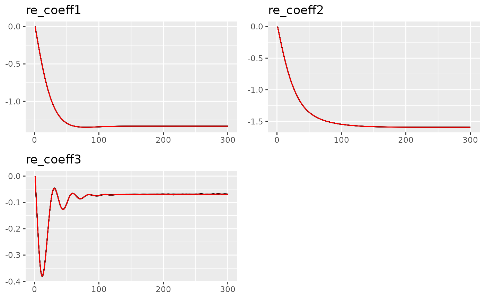

vignettes/random-effect.Rmd
random-effect.RmdLaird and Ware (1982) were the first to consider decomposing the underlying signal into fixed effects and random effects. The fixed effects are the same for all replicates, while the random effects are different for each replicate.
The model can be expressed:
\[Y_{ij} = \mathbf{x}^T_{ij} \mathbf{\beta} + \mathbf{d}^T_{ij} \mathbf{U}_i + \epsilon_{ij}, \qquad j=1 \ldots n_i, i=1,\ldots,m\]
where \(m\) is the number of subjects(replicates), \(n_i\) is the observation for each replicate. \(Y_{ij}\) is the \(j\)th observation in the \(i\)th replicate, \(\mathbf{x}_{ij}\) is the \(j\)th row of the design matrix \(\mathbf{X}_i\), \(\mathbf{\beta}\) is the fixed effects, \(\mathbf{d}_{ij}\) is the \(j\)th row of the design matrix \(\mathbf{D}_i\), \(\mathbf{U}_i\) is the random effects, and \(\epsilon_{ij}\) is the error term.
In Ngme2, we can specify the random effect models similar to
other ordinary models using f function (See e.g. Ngme2 AR(1) model). But remember that it is
only meaningful to use random effect model when we have enough
replicates (see Ngme2 replicates
feature).
In Ngme2, the noise can be Gaussian and non-Gaussian. The Gaussian case would be simply: \[U_i \sim N(0, \Sigma) \qquad i=1,\ldots,m,\] and the non-Gaussian (NIG and GAL) case would be: \[U_i|V_i \sim N(-\mu + \mu V_i, \Sigma) \text{ and } V_i \sim f(\nu) \qquad i=1,\ldots,m.\] where \(m\) is the number of subjects, \(\Sigma\) is the covariance matrix, \(\mu\) is the skewness parameter and \(\nu\) is the parameter for the mixing variable \(V\) (the distribution of \(V\) varies when we choose different type of non-Gaussian noises). More details can be found in Asar et al. (2020).
Next is one simple specification of random effect model.
library(ngme2)
# random effect model accepts formula argument, as the design matrix
ngme2::f(~1 + x, model = "re", noise = noise_nig(),
# data can be inherited from ngme() function
data = data.frame(x = 1:7))
#> Model type: Random effect
#> Covariance matrix (Sigma):
#> [,1] [,2]
#> [1,] 1 0
#> [2,] 0 1
#> Noise type: NIG
#> mu = 0
#> nu = 1In the following example, we have 100 groups, each group has 20 observations. The random effect follows a bivariate normal distribution with covariance matrix Sigma.
set.seed(32)
group <- 100
# the covariance matrix
Sigma <- matrix(c(20, 10, 10, 30), 2, 2)
U <- MASS::mvrnorm(group, mu=c(0,0), Sigma=Sigma)
# generate replicate vector (indicate which replicate the observation belongs to)
each_obs <- 20
repl <- rep(1:group, each=each_obs)
# generate data for both fixed and random effects
beta <- c(3, 2)
x2 <- rexp(group * each_obs)
x1 <- rep(1, (group * each_obs))
z1 <- rnorm(group * each_obs)
# simulate observations
Y <- double(group * each_obs)
for (i in 1:group) {
group_idx <- ((i-1)*each_obs+1):(i*each_obs)
Y[group_idx] <-
beta[1] * x1[group_idx] + beta[2] * x2[group_idx] + # fixed effects
U[i, 1] * 1 + U[i, 2] * z1[group_idx] + # random effects
rnorm(each_obs)
}First we fit the model using lme4 package, next we fit the model using ngme2.
# fit with lme4
library(lme4)
# lme4 has some problems with the latest version of Matrix
# if (packageVersion("Matrix") < "1.6.2") {
# lmer(Y ~ 0 + x2+ x1 + (z1 | repl),
# data=data.frame(Y=Y, x1=x1, z1=z1, repl=repl))
# }
out <- ngme(
formula = Y ~ 0 + x2 + x1 +
f(~1+z1, model="re",
noise=noise_normal()
),
replicate=repl,
data=data.frame(x1=x1, x2=x2, z1=z1),
control_opt = control_opt(
iterations = 300,
std_lim = 0.01,
verbose = FALSE,
seed = 3
)
)
#> Starting estimation...
#>
#> Starting posterior sampling...
#> Posterior sampling done!
#> Note:
#> 1. Use ngme_post_samples(..) to access the posterior samples.
#> 2. Use ngme_result(..) to access different latent models.
out
#> *** Ngme object ***
#>
#> Fixed effects:
#> x2 x1
#> 1.91 2.21
#>
#> Models:
#> $effect1
#> Model type: Random effect
#> Covariance matrix (Sigma):
#> [,1] [,2]
#> [1,] 14.617717 4.417091
#> [2,] 4.417091 24.786703
#> Noise type: NORMAL
#>
#>
#> Measurement noise:
#> Noise type: NORMAL
#> Noise parameters:
#> sigma = 1
#>
#>
#> Number of replicates is 100
traceplot(out, "effect1")
The final result is very close to the lme4 package.